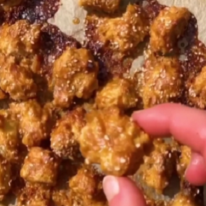

Ingredients
Tofu Marinade
- 400g tofu
- 3 big Tbsp peanut butter
- juice of 1 lime
- salt to taste
- 1/2 Tsp chili powder
- 1/2 Tsp ginger powder
- 1/2 Tsp garlic powder
- 2 Tbsp soy sauce
- Maple Syrup
Instructions
- In a bowl mix peanut butter, lime, salt, chili powder, ginger powder, garlic powder, soy sauce.
- Pat dry and tear in chunks adding it to the mix fully coating it.
- Spread evenly on a lined baking tray and generously drizzle maple syrup.
- Bake at 175C/350F for 25min.
Source Here